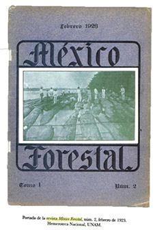
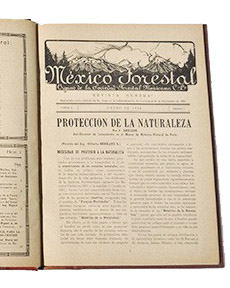

Referencias
- Boyer C. R. 2007. Revolución y paternalismo ecológico: Miguel Ángel de Quevedo y la política forestal en México, 1926-1940. Historia Mexicana, 57(001):91-138.
- Instituto Nacional de Ecología. 2007. Miguel Ángel de Quevedo: El apóstol del árbol. Capítulo Cuatro.
- Merino P. L. 2004. Conservación o deterioro. Secretaría de Medio Ambiente y Recursos Naturales. Instituto Nacional de Ecología. Consejo Civil Mexicano para la Silvicultura Sostenible A. C. México, 331 pp.
- Piñó S. J. 1935. Miguel Ángel de Quevedo, amar los árboles. En: Leñero, V. 100 entrevistas, 100 personajes. Pipsa, México. 292.
- Siller D. 1988. Uno de estos días. Plaza y Valdés, México. 217 pp.
Miguel Ángel de Quevedo
1862 - 1946
¡Hola! Me llamo Miguel Ángel José Ignacio de Quevedo Zubieta y nací en la hermosa ciudad de Guadalajara, Jalisco en 1862. En ese entonces el presidente de México, era el oaxaqueño Benito Juárez. Mi papá se llamaba José Valente García de Quevedo Portillo y mi mamá María de los Ángeles Zubieta y Maldonado. Desafortunadamente, mis padres murieron cuando yo era pequeño y junto con mis hermanos viaje a Francia, en donde el tío Bernabé Quevedo, canónigo de la Catedral de Bayona, se haría cargo de nosotros. La ciudad de Bayona se encuentra en el suroeste de Francia muy cerca del mar Cantábrico y de los Pirineos. Ahí, en Francia, estudié en la Universidad de Burdeos (1883) y en la Escuela Politécnica (1887) cuando se inició la construcción de la famosa Torre Eiffel. A los 26 años (1888) regresé a México para ejercer mi profesión. El presidente en ese entonces era el general Porfirio Díaz. Cuando cumplí los 30 (1892) me casé con la veracruzana María Adolfina de la Luz Carrara y Cevallos con quien tuvimos dos preciosas hijas, Ángela y Dolores.
Trabajé en temas muy diversos. Fui supervisor de las obras de drenaje en el Valle de México, construidas para evitar las inundaciones en la ciudad. Impulsé la creación de reservas y parques nacionales a lo largo del país, con el propósito de asegurar el buen funcionamiento de los bosques y proteger la vida silvestre. Promoví la creación de viveros para la reforestación de la ciudad y sus alrededores, inclusive doné parte de mi rancho “Panzacola” y es posible que lo hayas visitado. Fue declarado Parque Nacional por el Presidente Lázaro Cárdenas en 1938. Hoy en día se conoce como los “Viveros de Coyoacán”. Ahí está el “arboretum” o colección de mis árboles favoritos: liquidámbar, fresno, ahuehuete, cedro blanco, olmo chino, almez, varias especies de pinos y algunos eucaliptos.
Fundé la Escuela Nacional Forestal (1921), pionera en la enseñanza de este campo en México, así como la Sociedad Forestal Mexicana (1922) y su publicación “México Forestal”. La revista fue muy importante en la difusión del manejo forestal o silvicultura y la formulación de políticas mexicanas de aquellos años. Fundé la celebración al Día del Árbol, que celebrábamos el segundo jueves del mes de julio, apoyado por el oaxaqueño José Vasconcelos, creador de la Secretaría de Educación Pública y la escritora chilena Gabriela Mistral. Para conmemorar ese día reforestabamos gran cantidad de áreas. Fui asesor en la creación de la ley Forestal en 1926 y fungí como Jefe del Departamento Forestal de la Secretaría de Agricultura y Recursos Hidráulicos.
Morí a los 73 años satisfecho por las numerosas acciones que emprendí para evitar la deforestación de los bosques mexicanos a través de su conservación y reforestación. Por lo anterior me dieron el título de “Apóstol del árbol”.
Aportación


Sociedad Forestal Mexicana